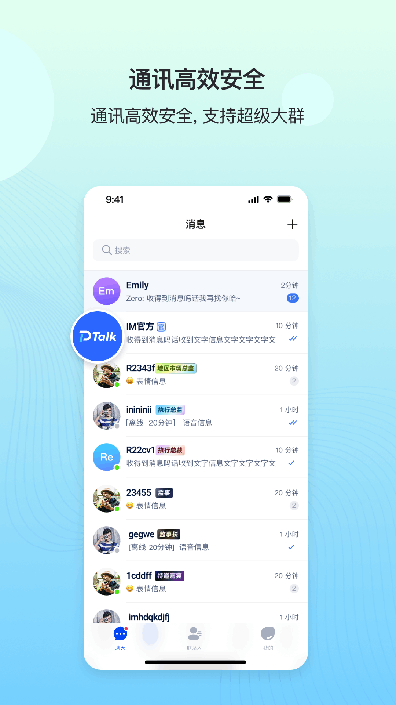

当我的用户群突破八千人那天，我终于换掉了用了三年的聊天工具
一个社区运营者从微信群聊的 500 人天花板换到 DeepTalk 的真实经历，聊那些被群聊人数卡死的无奈和终于放开手脚的痛快。
三月底的某个周四下午，我盯着电脑屏幕里微信群管理后台那个刺眼的数字——497。差三个人就到顶了，而后台还躺着二十三个等待审核的入群申请。这已经是我今年开的第七个群了。
我运营一个做独立硬件的小品牌，用户群从去年夏天开始爆发。第一个群五百人满的时候我没当回事，拉了第二个。第二个满了拉第三个。到第七个群的时候我发现自己已经记不清哪个群里有老用户、哪个群里是刚入手的新人，每周发一次的固件更新通知要复制粘贴七遍，每次发完还要挨个确认是不是被吞了。
更糟的是群里的消息质量。几百人的群里还能勉强维持秩序，一旦接近上限，广告号和伸手党就开始扎堆出现。我设了三个管理员轮值踢人，但每天早上打开手机还是能看到几十条漏网的推销信息。有人提议过 Telegram，我去看了一眼，界面干净但国内用户注册要翻墙，根本没法推荐给自己的用户。Discord 倒是好，但服务器那套体系对普通用户来说太复杂，装都装不明白。
那段时间我每天在各个群之间切换，像个在七个房间里来回跑的服务员，哪个房间的铃响了就冲过去收拾一下。直到有天凌晨两点，我在刷开发者论坛的时候偶然看到有人提到一个叫 DeepTalk 的东西——说单个群上限三十万人，还带话题标签和群公告。
我当时以为是吹牛。三十万人？Telegram 也才二十万，微信群聊连零头都不到。但我还是搜了一下，找到了它的DeepTalk官网。
从DeepTalk下载拿安装包很快，手机号注册，四五分钟就走完了。我先用自己公司的同事试了一个小群，五个人，发消息、传文件、语音通话，一切正常。然后我把去年最活跃的那个群里几百个老用户拉了进来——不是复制粘贴那种群发邀请，DeepTalk 支持直接导入通讯录匹配，老用户基本都能自动找到。
真正让我惊讶的不是能拉多少人，而是大群的管理体验。后来去DeepTalk文档翻了一下才发现，DeepTalk 有一套专门给几千人以上群准备的东西，光群公告就能写结构化的置顶消息，新成员进群第一眼就能看到注意事项和常见问题链接，不用每次都有人@管理员问重复的问题。话题标签更绝——我在群里开了「固件反馈」「配件推荐」「折腾分享」「新人报到」四个话题，大家的讨论自动归到各自的标签下，想看固件反馈就只看那个标签的消息，不会被闲聊淹没。

说到这里不得不提管理员权限。我给三个老用户设了管理员，每个管理员可以独立审核入群申请、踢出违规成员、发布群公告。原来在微信群里我是唯一一个有管理员权限的人，凌晨三点有人发广告我得爬起来处理。现在可以轮值了。
迁移的过程比我想象中顺利。我在老群里先发了公告，说我们要换一个新的聊天平台，附上了 DeepTalk 下载地址，然后就等着。第一天有大概三百人跟过来，第二天又来两百。老群没解散，但我不再在里面发新内容了。到第七天，DeepTalk 群里的人数稳定在两千出头，老群里剩下的大多是已经不用这个产品的僵尸号。
迁移之后第一个周末，我在群里组织了一次线下同城活动。报名只用群公告发了一条消息，然后用话题标签开了个「#同城活动-广州站」的讨论区，大家在里面报人数、商量地点、拼车。当天来了四十多个人，是我做这个品牌以来规模最大的一次线下聚会。如果还在微信群里，这次活动的讨论大概率会被日常闲聊冲散在几百页往上翻的历史记录里，没人会注意到。
当然 DeepTalk 也不是没毛病。图片发送默认会压缩，有时候用户发的产品实拍图被压得模糊不清，要手动打开原图开关才能发清楚。撤回消息的时限我没测过具体几分钟，长按消息看有没有撤回按钮就行，有就撤，没有就认了。还有注册的时候要短信验证码，我遇到过一次验证码延迟，等了快两分钟才收到，后来查了下是手机自带的短信拦截功能把验证码识别成了垃圾短信。
但这些都是小问题。真正让我觉得舒服的是——我再也不用开第八个群了。现在群里两千多人，讨论活跃但不混乱，管理员团队各司其职，我每天花在群管理上的时间从原来的两个小时降到了十五分钟。DeepTalk 给的那个三十万上限我这辈子大概率是用不到，但知道它在那里，就像知道自己开的不是一辆只能坐五个人的车，而是一辆巴士——想拉多少人就拉多少，不用再拆成好几趟跑。
上个月底我在群里发起了一次用户调研，问大家为什么愿意跟着迁移。有个用户说：「原来七个群我都不知道该看哪个，现在一个地方就够了。」
这句话比任何数据都让我开心。顺便说一句，DeepTalk 的这套资料分别放在GitHub、Gitee、GitCode 三个仓库里，按哪个方便访问哪个。